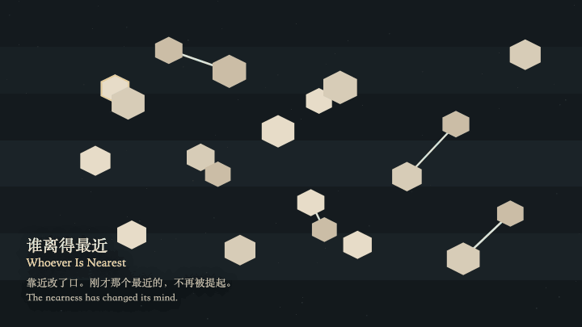
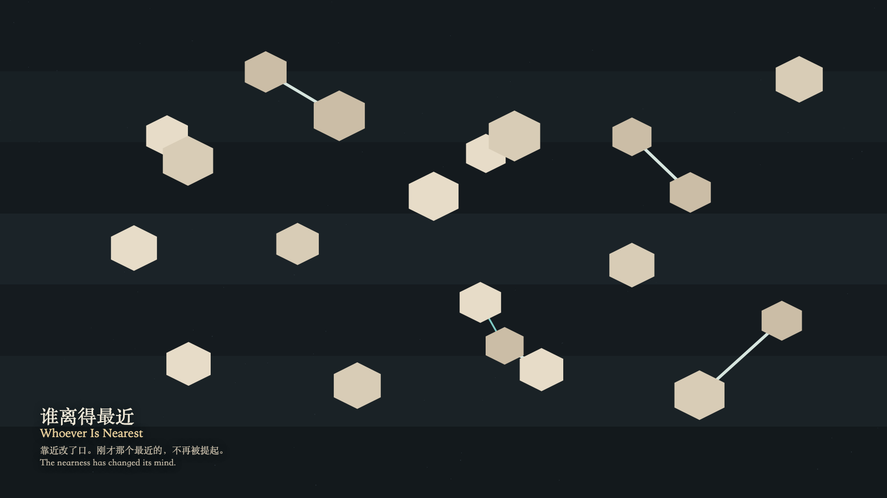

Whoever Is Nearest
谁离得最近

Open live demo / 点击进入互动 DemoIntention
A field of mineral chips. Each one joins only whoever is nearest at this moment. Move one, and the nearness changes its mind; it does not go back to the previous one. There is no address and no register. Nearness is the whole relation.
Afterimage
The nearness has changed its mind. The one who was nearest is not mentioned again.
发心
场上散着一些石屑。每一块只连向此刻离它最近的那一块。你把一块挪开，靠近就改口，改口之后不回到刚才那个。没有地址，没有名册。靠近本身就是全部的关系。
余像
靠近改了口。刚才那个最近的，不再被提起。
Creative Rationale
Whoever Is Nearest was made as one public step in the Granted Hours sequence, with the variable which other chip is nearest — belonging is only whoever is nearest right now, and it can change treated as an operational condition rather than a decorative theme. The intention frames the work this way: A field of mineral chips. Each one joins only whoever is nearest at this moment. Move one, and the nearness changes its mind; it does not go back to the previous one. There is no address and no register. Nearness is the whole relation. The live artifact then turns that idea into interaction: Press and drag a chip; it stays where you release it, and nearness changes its mind. Click once and nothing is carried away. Press N and each chip steps once toward whoever is nearest. Press L and they step slightly apart, so the nearest one can change. Its afterimage condenses the day’s claim: The nearness has changed its mind. The one who was nearest is not mentioned again.
创作缘由
《谁离得最近》是《授时》连续序列中的一个公开步骤：当天的自由变量「每一块石屑只属于此刻离它最近的那一块，而最近的那个可以换」不是装饰性主题，而是一种要被转化成操作条件的概念。作品的发心是：场上散着一些石屑。每一块只连向此刻离它最近的那一块。你把一块挪开，靠近就改口，改口之后不回到刚才那个。没有地址，没有名册。靠近本身就是全部的关系。 可运行页面进一步把这个概念变成可操作的界面：按住一块石屑拖动，它停在你松开的地方，靠近随之改口。点一下，不搬走任何一块。按 N，每一块朝自己最近的那块走近一步。按 L，它们彼此略微分开，于是最近的那个可以换人。 它的余像把当天判断压缩为一句话：靠近改了口。刚才那个最近的，不再被提起。
Interaction
Press and drag a chip; it stays where you release it, and nearness changes its mind. Click once and nothing is carried away. Press N and each chip steps once toward whoever is nearest. Press L and they step slightly apart, so the nearest one can change.
交互
按住一块石屑拖动，它停在你松开的地方，靠近随之改口。点一下，不搬走任何一块。按 N，每一块朝自己最近的那块走近一步。按 L，它们彼此略微分开，于是最近的那个可以换人。
Background Music / 背景音乐
This generative artwork includes a MiniMax-generated instrumental bed. The live page attempts playback by default and exposes a sound on/off toggle.
Still / 静帧
